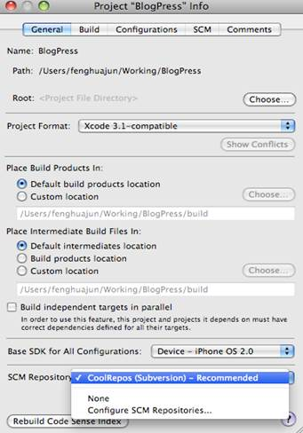

VS/TFS(Team Foundation Server) 7
XCode
XCode支持使用SVN管理代码。
配置XCode：
1. 在Xode的菜单中选择 SCM -> Configure Repositories，填写SVN服务器的信息。
2. 然后选SCM -> Repositories 你就可以Import, Check Out你想要的内容了，SVN的日常管理也可以在这里做。
3. Checkout项目以后在你的项目的属性中设置项目的SCM。

4. 设置好以后，你在你的项目视图中就可以看到新的一列，M表示该文件已经修改过，然后你已经可以通过SCM菜单，或者右键菜单直接进行SVN的操作， commit，update，revert，diff and log等等。
5. SCM->Get SCM Info 可以看到任何文件的版本信息。
Git
Android通常使用Git和Repo管理代码，可以使用Git代替Repo或混合Git、Repo生成复杂的命令。
1. 基本命令。
1） 基本操作
|
git init |
初始化版本库 |
|
git clone |
克隆版本库 |
|
git add |
添加新文件 |
|
git commit |
提交到本地版本库 |
|
git checkout |
检出(分支、标签) |
2） 分支
|
git branch |
列出分支 |
|
git branch -r |
列出远程分支 |
|
git branch -a |
列出所有分支 |
|
git branch newBranch |
基于当前分支创建新分支newBranch |
|
git branch -D branchName |
删除分支branchName |
|
git branch -d branchName |
仅删除已合并分支branchName |
|
git merge |
合并分支 |
3） 历史
|
git log |
显示全部历史 |
|
git log -p |
显示版本历史，以及版本间的内容差异 |
|
git log -5 |
显示最近的5个提交 |
|
git log -5 -p |
显示最近的5个提交，以及版本间的内容差异 |
|
git diff 112 115 |
显示112和115版本的差别 |
VS/TFS(Team Foundation Server)
创建Visual Studio account和团队项目
1. 注册Visual Studio account。
2. 创建团队项目，并选择版本控制方式。
有关创建团队项目的更多信息，请参考http://msdn.microsoft.com/en-us/library/vstudio/ms181477.aspx
使用Visual Studio 连接到团队项目
如果尚未连接到您想要在其中工作的团队项目，请选择 连接到团队项目。
选择 主页，然后选择 源代码管理资源管理器。
在源代码管理资源管理器中，导航到的团队项目。 选择 未映射。
使用 映射 对话框映射您的团队项目的根文件夹为适当的本地文件夹。 例如，您可以映射 $/SiteApp 到 c:\code\siteapp。
系统会提示您下载到映射文件夹的文件。
更多相关信息，请参考
Connect Visual Studio to TFS http://tfs.visualstudio.com/zh-cn/learn/connect-vs
开发您在“master”父文件夹中的代码
- 在菜单栏上选择 查看，其他窗口，源代码管理资源管理器。
- 在 源代码管理资源管理器，则选择左窗格中的团队项目。
- 在菜单栏上选择 文件，源代码管理，新建文件夹。
键入 主要 并选择 Enter 键。
- 打开 Main 文件夹的快捷菜单中选择 签入。
- 签入确认 出现对话框。
选择 再次不提示 并选择 是。
- 您的变更集签入。
上传代码
1. 在”解决方案管理器”中右键选择”添加到源代码管理”。
2. 添加Comment并CheckIn
更多请参考：
http://msdn.microsoft.com/en-us/library/vstudio/ms181384(v=vs.110).aspx
更新检查代码，比较版本，回退历史版本
Visual Studio会自动更新代码库中的代码。例如，Site.css 在color变成#ddd后自动更新。
比较代码修改
提交更改
更多信息，请参考http://tfs.visualstudio.com/zh-cn/learn/check-files-in-and-out-vs
更多有关TFS的信息，请参考
使用版本控制http://msdn.microsoft.com/zh-cn/library/vstudio/ms181368(v=vs.110).aspx